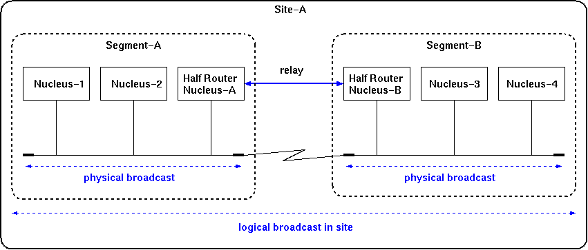

A guide line is presented for indicating which function should be assigned to which machine at a site and how to set it appropriately when OZ++ is used. The OZ++ system performs calculations by operating on objects on the executive system known as an executor. The executor cannot operate by itself, so it is necessary to have a nucleus that can manage the executor existing on each machine and supply basic functions such as communication etc. There are several types of nucleus suitable for these roles. Therefore, it becomes necessary to make available the proper nucleus. To enable the communication among sites, it is necessary to lay out the application gateway which relays the nucleus communication. The same applies to objects. That is, not only the user object but also the management object supporting the user object should be placed at the proper position in the site.
In this document, the system configuration is presented. Also, the layout of the nucleus and management objects in the system are described.
Configuration of OZ++ Site
The configuration of the OZ++ system is as follows:
The logical broadcast is one that is performed over segments through the relay of the halfrouter nucleus, as shown in Figure 2.1--1.
|  |
Layout of a Nucleus
There are some nuclei which play special roles in the site, and it is very important to lay them out properly. The layout of these nuclei is set by registering them in a text file called the nucleus table. Please see set up of nucleus for an explanation of nucleus.
Be sure to set only one executor ID management nucleus at a site. It is necessary for the nucleus, to be operational at all times and so it should be started on a station that is working continuously.
When the site is composed of several segments, it is necessary to set one halfrouter nucleus in each segment.
A series of objects is prepared in OZ++ to provide the necessary functions for the user object operation. These objects are called a distributed object management system in summary. To operate the user object, it is necessary to properly lay out the management object. The name and outline of each management object are shown as follows.
If a class without self-management is required, the requirement is transmitted through a network and supplied to the executor after the class delivery is received by the class object which manages the class.
As a management object needs another management object to control its operation, an object image including a management object must be created at the beginning. The newimage is provided as a tool for creating the object image of the management object. Produce the image with the use of this tool. The method of using this tool is written in explanation of newimage.
Domain
The management objects described above are registered under the following names in the name directory.
| Class object | ":classes:xxxxxx" | |
| Name directory | ":name" | |
| Catalog | ":catalog" |
The name space of an object created by the name directory, such as that shown above, is called a domain. The previous section states that only one name directory and only one catalog are required in a domain. This means that there are objects corresponding to ":name" and ":catalog" and they have to play the roles of name directory and catalog.
You can build any number of domains in site, but each of them must has a name directory and a catalog.
Characteristics of Management Object
When various objects are laid out, various characteristics are shown.
Since the OZROOT without class object is disabled from operating, it is necessary to hold the class objects for those executors that may not be started at the same time. Otherwise, it is desirable to prepare an executor which is always running and to set a class object on this executor.
However, it is impossible to operate the user object in practice, unless the name directory and catalog necessary for the domain operation as well as the classes used to actuate the launcher (refer to "README.launcher") etc. required for starting the application operation are provided. These classes needed for the basic objects are supplied as a boot class. Whether or not the boot class is managed by a class object is specified when the class object is created with the newimage.
The boot class of a non-preload class is different from the preload class. It can not be supplied to the executor until it is managed properly by a class object.
Then, is the class object which does not manage the boot class worth nothing? This is not the case. For classes without self-management, the class object can be delivered from other class objects on the network. However, this operation can be performed only by the preload class. Therefore, it is necessary to create a class object which does not manage the boot class, so as to receive the delivery of classes in sequence and supply the classes to the executor at the same time. (In this case, there must exist a class object managing the boot class somewhere on the network.)
Since a domain without a name directory can not operate, create one on the executor which is always working at your site.
It is very difficult to start the OZ++ program in a domain without a catalog . The catalog should be set on the same executor as the name directory, and it should be operated at all times.
Layout of Management Object
A guideline is presented to show how to lay out each management object in a better way.
A simple procedure for creating the site master is prepared in newimage and the executor which has all the objects needed for the site master is easy to create using this procedure[+].
A site master created with a diffusion source is included in this release. In addition to the boot class, various class libraries used for the OZ++ user and a lot of classes required for demonstration are registered in the class object and catalog on this site master. This site master should be tried at the beginning is suggested.
A simple procedure for creating a station master is prepared in newimage, and an executor which has all the objects written above is easy to create using the procedure.
A simple procedure for creating a slave without class objects is prepared in the newimage and the executor which has all the objects written above is easy to create using the procedure.
Creating Method of Management Object
The management objects are created with a tool called newimage. The method of using this tool is written in explanation of newimage.